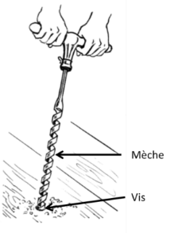
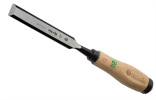
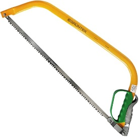
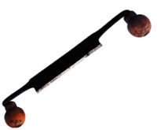
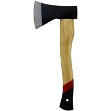
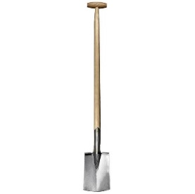
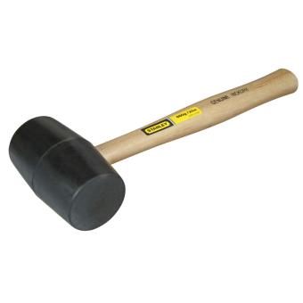
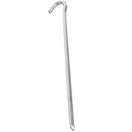
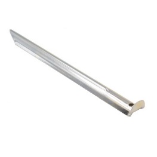

Dans cette étape, ton but est simple. Il faut que tu associes à chaque image le bon nom d’outil. Ton but
sera atteint quand l’activité sera validée.
Image 1

Hachette
Image 2

Scie à bûche
Image 3

Ciseau à bois
Image 4

Plane
Image 5

Maillet
Image 6

Pelle Bêche
Image 7

Maquereau
Image 8

Ciseau à bois
Image 9

Tarrière
Etape 2 : Savoir à quoi servent les outils
Ta mission, si tu l’acceptes est de relier le nom de l’outil à sa définition. Si en validant, l’activité
est validée, tu sauras à quoi sert chaque outil !
Définition 1 : Cet outil s’utilise en frappant dessus avec un maillet ou avec la paume de la
main. Il permet de faire une entaille dans 2 morceaux de bois que tu veux emboîter.
L’assemblage des 2 morceaux de bois s’appelle un mi-bois
Définition 2 : C’est la perceuse du scout. Cet outil permet de percer des trous dans le
bois. On peut ensuite mettre une cheville (petit bout de bois) dans 2 bouts de bois percés
pour les assembler.
Définition 3 : Plus rapide, plus propre et moins dangereuse que la hachette. Sa denture est
étudiée pour pouvoir couper du bois vert.
Définition 4 : Cet outil sert à trancher le bois dans le sens des veines pour rendre une
partie du bois plate.
Définition 5 : On m’utilise aux scouts pour fendre le bois principalement.
Définition 6 : Cet outil permet à l’objet qu’il percute d’entrer dans du bois sans détruire
le bois. Il permet aussi de planter des sardines.
Hachette
Scie à bûche
Ciseau à bois
Plane
Maillet
Tarrière
Etape 3 : Apprends à bien utiliser les outils
Cette vidéo te donnera tous les trucs et astuces pour utiliser les outils convenablement et efficacement
!
Etape 4 : Sais-tu bien utiliser les outils ?
Dans cette étape, ta quête sera simple : tu devras choisir pour chaque question la bonne réponse pour le
valider.